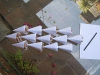
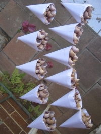
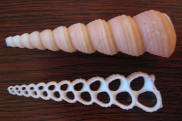

Experiment 1
The purpose of these experiments was to practice sensing the CSE and to compare two different CSE systems.
In the picture are 13 little paper cones, each containing 7 Turritella terebra seashells in hexagonal shape. The cones are aligned away from the Sun. By gently sensing with a drawing coal, subtle repulsive layers were perceived. Sometimes they were surprisingly noticeable for a few seconds, and in other times sensing of these layers disappeared.

Here is another setup with 11 little paper cones, each containing 7 seashells in hexagonal shape. The second row is about 10 cm from the first row. This concave setup created much stronger CSE layers that were about 1 cm in thickness. The perceived CSE layers located at the distances of 5cm, 10cm, 15cm, 20cm, 60cm, and 120cm from the seashells.
These experiments were made in Sydney, Australia, on December 2009.
The characteristics and nature of the CSE
Turritella terebra structural analysis
The spiral diameter grows ≈ 1.17 times by every loop, corresponding 1.618 times growth by every third loop. The cone angle is about 13.5° and equivalent to Constable's etheric weather engineering cone angle (Mark 5 Spider).
The center cut reveals inner cavity structure. There is only one cavity, but due to spiral curvature the center cut has many cavities. The perceived CSE from previous seashell systems imply that CSE is multiplied in spiral cavities.
Grooves on the outside edge of the seashell could contribute to the total CSE. In addition to growth spiral main groove, there are 5 little grooves on the growth spiral. As one seashell makes 10+ loops, the number of grooves and cavities multiplies.
Update (February 1, 2011) The diameter of the cavity grows from ≈ 1 mm to 10 mm. The calculated matter wave frequencies correspond from 18.4 Hz to 0.2 Hz (using free electrons effective mass). As an example, 1 mm diameter cavity produces matter wave maximums to the distances of 1, 3, 5, 10, 20, 40, 80 cm and so on.
Theoretically, many wave harmonics could be sensed as the seashell cavities widen smoothly. Maybe only two wave harmonics (from 1 mm and 1.5 mm resonant cavities) were detected due to experimenter's individual tuning capabilities and limitations of the detector instrument. Or could there be some kind of effect in conical spiral cavities that intensify certain frequencies?
It is interesting that 1.5 mm cavity produces matter wave frequency of 8.2 Hz, which is very close to the peak intensity of Schumann resonances at 7.8 Hz (± 0.5 Hz). Possibly Earth's natural EM pulses intensified or some other way made resonant matter waves more observable.
It is also possible that cavities rhythmical location in space (see center cut) intensified two frequencies. Certainly properly phased cavities produce matter waves in phase i.e. coherent matter waves.
Clearly, more experiments are required to clarify these possibilities.